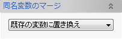

挿入 ユーザー定義フィーチャー
挿入 ユーザー定義フィーチャー
ユーザー定義フィーチャーをモデルに挿入します。
操作方法
ユーザー定義フィーチャーファイルを選択します。
定義ファイルを選択すると可変パラメータを入力するためのダイアログが表示されます。
パラメータを指定してOKボタンで挿入を実行します。
「プレビューを表示」ボタンで作成される要素をプレビュー表示して形状を確認することができます。

表示されるダイアログは定義ファイルによって異なります。
同名変数のマージ
同じ名前の変数がある場合、このオプションに従って挿入されます。

- 既存の変数に置き換え
ドキュメント内の変数の値で置き換えます。インポートされる形状が変わる可能性があります。
- インポート元で上書き
インポートするファイル内の変数の値で既存の変数を上書きします。既存の変数を使用している形状が変わる可能性があります。
- 新規変数としてインポート
全て新しい変数としてインポートされます。 変数名は「（変数名）_（数値）」となります。
- 同じ値のみ置き換え
同じ値の変数の場合、ドキュメント内の変数に置き換えられます。 違う値の場合は新しい変数としてインポートされます。 新しい変数の場合は、名前が「（変数名）_（数値）」となります。